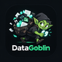

Nine stages run down the centre column, top to bottom: planning, discovering, fetching, reducing, extracting, validating, normalising, deduplicating and finalising. A query enters at the top and travels the column. Tokens that leave the column are values segregated out of the run: green tokens are accepted as proven, red tokens are discarded because their citation is not on the page, amber tokens are kept but undecided and never turn green. Blue cylinders on the right are persisted state, and fill as data lands in them. The small rings at the validating stage mark values settled by a free check with no model call.
Each stage below is a real call the pipeline makes, with the ceiling it runs under.
Extraction is not the hard part. This is: whether a value is allowed to be called proven.
Determined by the question's shape, not by a marketing number.
Written to workflows before a single page is fetched.
Measured on this workspace's real data.